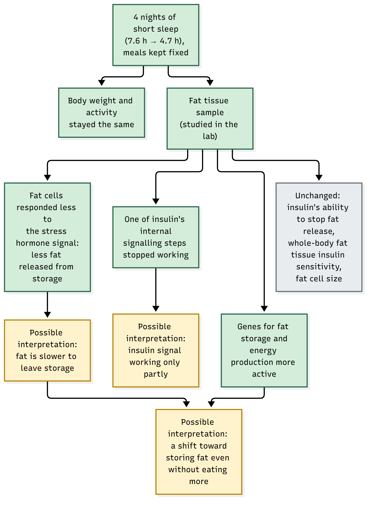

Nutritional science can no longer be confined strictly to what lies on the plate. Decades ago, dietary practice was dominated by basic energy thermodynamics and macronutrient counting. Then arrived personalization: individualized postprandial glycemic excursions, gut microbiota signatures, and meal chronobiology. Soon after, physical activity, psychosocial stress, and the built environment joined the matrix.
Now, another fundamental pillar enters clinical dialogue—one physically removed from our meals, yet intimately woven into our daily biological rhythm: sleep.
The classic aphorism once declared: *"Tell me what you eat, and I will tell you what you are."* Perhaps the modern clinician must soon routinely ask: *"How many hours do you sleep, and what is your sleep quality?"*
Is sleep truly so integral to nutrition? Is this an unidirectional pathway, or a bidirectional feedback loop? In this analysis, we evaluate both dimensions against current empirical evidence.
In brief:
- Key Findings: Controlled laboratory and real-world trials establish that sleep curtailment increases daily caloric intake (by up to ~300 kcal), stimulates hedonic food craving, and causes weight lost during caloric restriction to derive predominantly from fat-free mass rather than adipose tissue. Conversely, macronutrient composition and meal timing directly modulate sleep architecture.
- Evidence Reliability: Experimental directions across appetite and caloric intake trials are remarkably consistent, though trial durations remain relatively acute. Adipose tissue molecular biopsies originate from small preliminary cohorts (n=9).
- Clinical Takeaway: Sleep duration and circadian consistency must be integrated into weight management and metabolic health protocols, without inducing counterproductive sleep anxiety (orthosomnia).
The First Half of the Loop: Sleep Deprivation Drives Hyperphagia
The mechanistic exploration began in earnest with *Spiegel et al. (2004)*, who restricted 12 healthy young men to 4 hours of sleep for two consecutive nights under strictly clamped caloric and activity conditions. Circulating leptin (satiety signal) dropped by ~18%, while ghrelin (orexigenic hormone) surged by ~28%. Self-reported hunger increased by 24%, with cravings for calorie-dense, carbohydrate-rich foods spiking by 33% to 45%.
The disruption extends far beyond peripheral endocrine signaling into neurocognitive reward centers. *Greer et al. (2013)* performed functional neuroimaging (fMRI) in sleep-deprived individuals presented with food choices. Cortical regions governing cognitive evaluation and executive decision-making were blunted, while the amygdala—mediating emotional reactivity and reward salience—exhibited heightened activation. The neurocognitive brake pedal slackens, while the hedonic accelerator becomes sensitized.
In terms of actual consumption: *St-Onge et al. (2011)* demonstrated in 30 adults that 4-hour sleep restriction increased ad libitum daily energy intake by ~296 kcal compared to 9-hour sleep, with excess calories predominantly sourced from dietary fat. In a 225-subject trial, *Spaeth et al. (2013)* showed that 5 nights of sleep restriction induced an average weight gain of 0.97 kg (vs. 0.11 kg in controls), with over 550 excess kcal ingested selectively during late-night hours (22:00–04:00). Furthermore, *Covassin et al. (2022)* confirmed through randomized laboratory feeding that sleep curtailment selectively expanded visceral adipose tissue depots.
Crucially, does extending sleep reverse this trajectory? *Tasali et al. (2022)* conducted a randomized clinical trial in 80 overweight adults habitually sleeping <6.5 hours per night. Without any prescribed dietary intervention, extending sleep by an average of 1.2 hours per night resulted in a statistically significant, objectively measured reduction in daily energy intake of ~270 kcal (95% CI: −393 to −147) in real-world living conditions.
Beyond Caloric Volume: Altered Substrate Partitioning During Dieting
The metabolic sequelae of sleep deprivation transcend sheer caloric excess. When an individual actively restricts calories, sleep loss radically alters the composition of tissue mobilized for energy.
In a landmark trial by *Nedeltcheva et al. (2010)*, 10 overweight adults underwent identical moderate caloric restriction under two cross-over sleep schedules: 8.5 hours vs. 5.5 hours per night. Total scale weight loss was nearly identical across conditions (~3 kg). However, the qualitative composition of the weight loss differed dramatically: during short sleep, fat loss was suppressed by 55% (0.6 kg vs. 1.4 kg), while loss of fat-free lean body mass escalated by 60% (2.4 kg vs. 1.5 kg). Concurrently, participants experienced greater subjective hunger. Despite identical bioenergetic deficits, sleep restriction forced the body to burn skeletal muscle protein rather than adipose triglycerides.
Peripheral glycemic regulation is similarly fragile. *Donga et al. (2010)* demonstrated that a single night of 4-hour sleep induced widespread insulin resistance, reducing peripheral glucose disposal rates by ~25%.
At the cellular level of adipose tissue, *Singh et al. (2024)* examined ex vivo subcutaneous fat biopsies from 9 healthy postmenopausal women following 4 nights of partial sleep restriction (calorically clamped and weight-stable):
- Adipocytes exhibited blunted lipolytic responsiveness to sympathetic beta-adrenergic stimulation, impairing the mobilization of stored fatty acids.
- Adipocyte intracellular insulin signaling displayed selective downstream phosphorylation defects.
- Transcriptional profiling revealed significant upregulation of genes driving lipogenesis and substrate synthesis.

The Reverse Axis: How Diet Modulates Sleep Architecture
This biological relationship operates as a reciprocal circuit. The composition and timing of nutritional intake directly remodel nocturnal sleep architecture.
*St-Onge et al. (2016)* evaluated 26 adults under controlled feeding followed by an ad libitum food intake day. Polysomnographic tracking revealed that higher dietary fiber intake was significantly correlated with longer durations of restorative slow-wave sleep (SWS). Conversely, higher intake of saturated fatty acids predicted decreased slow-wave sleep, while refined carbohydrates and high glycemic index meals were strongly associated with nocturnal micro-arousals.
Meal chronobiology constitutes another pivotal link. *Vujović et al. (2022)* demonstrated that delaying meals by 4 hours—while strictly matching total calories, macro composition, sleep schedules, and photoperiod—amplified hunger hormones, suppressed 24-hour core energy expenditure, and shifted adipose gene expression toward lipid accumulation. What we eat, when we eat, and how we sleep function as three mutually dependent cogs in human circadian physiology.
Methodological Nuance and Critical Appraisals
While these mechanistic and clinical insights are compelling, several caveats must guide clinical interpretation:
- Laboratory Extremes: Experimental models commonly enforce 4-hour sleep restriction. Sustained 4-hour nocturnal sleep is relatively uncommon in free-living populations.
- Dynamic Adaptations Defy Linear Models: Multiplying a 270 kcal daily deficit across 365 days to forecast 10 kg annual fat loss ignores metabolic adaptation, appetite compensatory shifts, and endocrine feedback loops.
- Epidemiology Demonstrates Correlation, Not Directionality: The meta-analysis by *Cappuccio et al. (2008)* covering 634,511 individuals confirmed odds ratios of 1.89 (children) and 1.55 (adults) for obesity in short sleepers. However, cross-sectional cohorts cannot exclude reverse causality, as obesity independently precipitates obstructive sleep apnea (OSA) and systemic low-grade inflammation.
- Preliminary Biopsy Samples: Human adipose tissue transcriptional data stems from small cohorts (n=9 postmenopausal women) and requires wider verification.
**Dietary Partitioning & Adipose Tissue:** Selective lean tissue wasting during calorie deficit and adipocyte biopsy signaling are documented in small, rigorous trials (n=9–10); these represent potent working physiological hypotheses (Evidence Confidence: Low to Moderate).
Actionable Clinical Takeaways
- Incorporate Sleep Screening into Nutritional Assessment: Weekly mean sleep duration, bedtime regularity, and circadian chronotype provide clinical context comparable to a 3-day dietary log.
- Prioritize Sleep Before Escalating Dietary Restriction: For clients experiencing weight plateaus or unmanageable evening cravings, optimizing sleep hygiene often restores metabolic flexibility more effectively than further caloric starvation.
- Protect Sleep During Active Weight Loss: Inadequate sleep during caloric deficit risks sacrificing skeletal muscle rather than visceral adipose tissue.
- Contextualize Nocturnal Eating Biologically: Midnight snacking is frequently a neurobiological manifestation of circadian desynchronization and reduced prefrontal inhibitory tone, rather than simple "lack of willpower."
- Guard Against Orthosomnia: Striving compulsively for a rigid 8-hour sleep metric can induce performance insomnia. The goal is circadian consistency, not perfection.
Conclusions
Nutritional science is actively transcending the confines of the food plate to interface with human chronobiology. What we consume, when we ingest it, and how deeply we sleep are interconnected facets of circadian metabolic health. While intervention literature continues to evolve, the practical mandate for clinicians and researchers is straightforward:
One of the most cost-effective diagnostic questions in clinical nutrition remains: How many hours of restorative sleep do you get each night?
📚 References
- Cappuccio FP, Taggart FM, Kandala NB, et al. (2008). Meta-analysis of short sleep duration and obesity in children and adults. *Sleep*, 31(5), 619–626.
- Covassin N, Singh P, McCrady-Spitzer SK, et al. (2022). Effects of experimental sleep restriction on energy intake, energy expenditure, and visceral obesity. *J Am Coll Cardiol*, 79(13), 1254–1265.
- Donga E, van Dijk M, van Dijk JG, et al. (2010). A single night of partial sleep deprivation induces insulin resistance in multiple metabolic pathways in healthy subjects. *J Clin Endocrinol Metab*, 95(6), 2963–2968.
- Greer SM, Goldstein AN, Walker MP. (2013). The impact of sleep deprivation on food desire in the human brain. *Nat Commun*, 4, 2259.
- Nedeltcheva AV, Kilkus JM, Imperial J, et al. (2010). Insufficient sleep undermines dietary efforts to reduce adiposity. *Ann Intern Med*, 153(7), 435–441.
- Singh P, Beyl RA, Stephens JM, et al. (2024). Shortened sleep duration impairs adipose tissue adrenergic stimulation of lipolysis in postmenopausal women. *Obesity*, 32(12), 2264–2274.
- Spaeth AM, Dinges DF, Goel N. (2013). Effects of experimental sleep restriction on weight gain, caloric intake, and meal timing in healthy adults. *Sleep*, 36(7), 981–990.
- Spiegel K, Tasali E, Penev P, Van Cauter E. (2004). Brief communication: Sleep curtailment in healthy young men is associated with decreased leptin levels, elevated ghrelin levels, and increased hunger and appetite. *Ann Intern Med*, 141(11), 846–850.
- St-Onge MP, Roberts AL, Chen J, et al. (2011). Short sleep duration increases energy intakes but does not change energy expenditure in normal-weight individuals. *Am J Clin Nutr*, 94(2), 410–416.
- St-Onge MP, Roberts A, Shechter A, Choudhury AR. (2016). Fiber and saturated fat are associated with sleep arousals and slow wave sleep. *J Clin Sleep Med*, 12(1), 19–24.
- Tasali E, Wroblewski K, Kahn E, Kilkus J, Schoeller DA. (2022). Effect of sleep extension on objectively assessed energy intake among adults with overweight in real-life settings: a randomized clinical trial. *JAMA Intern Med*, 182(4), 365–374.
- Vujović N, Piron MJ, Qian J, et al. (2022). Late isocaloric eating increases hunger, decreases energy expenditure, and modifies metabolic pathways in adults with overweight and obesity. *Cell Metab*, 34(10), 1486–1498.